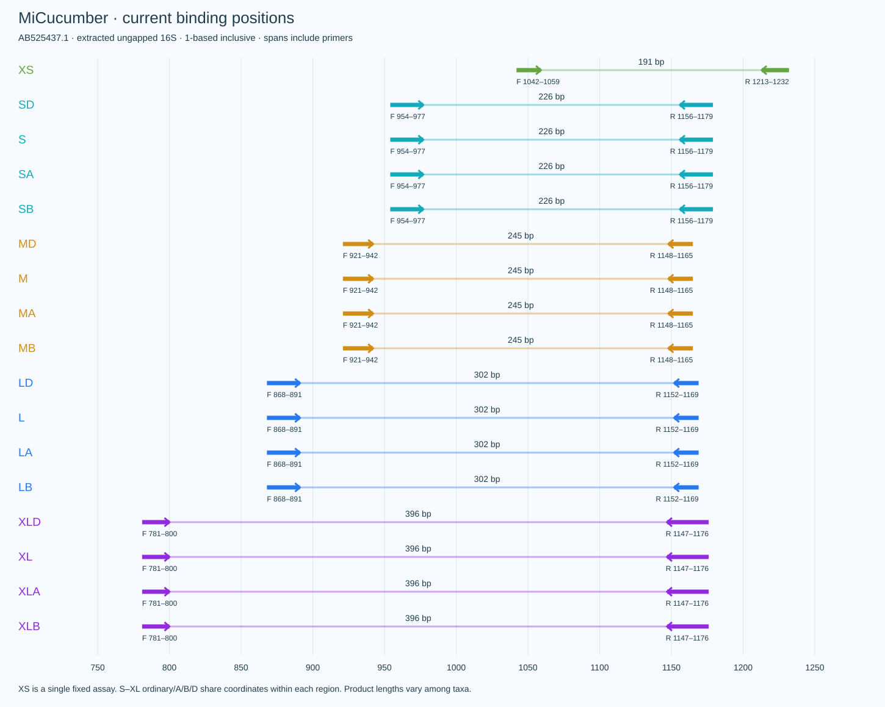
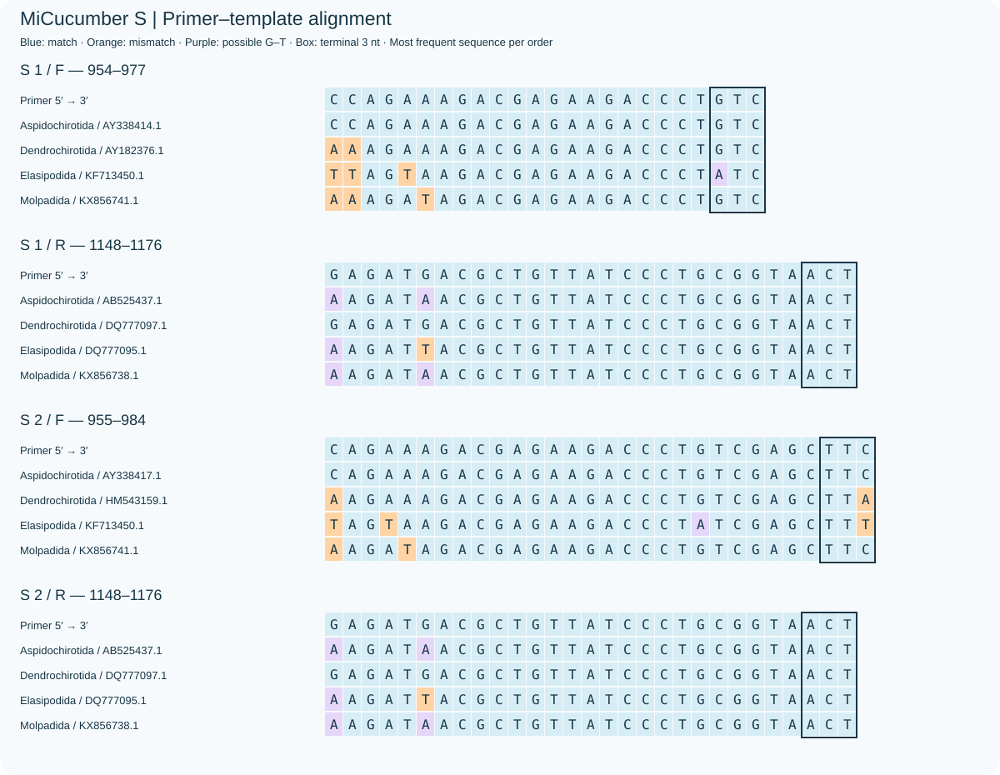
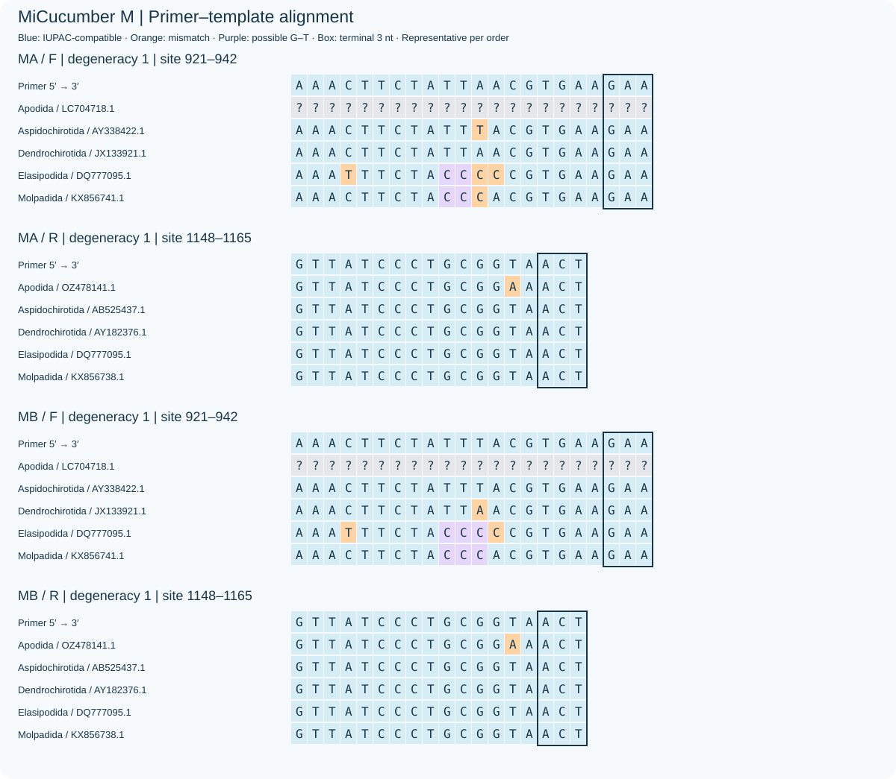
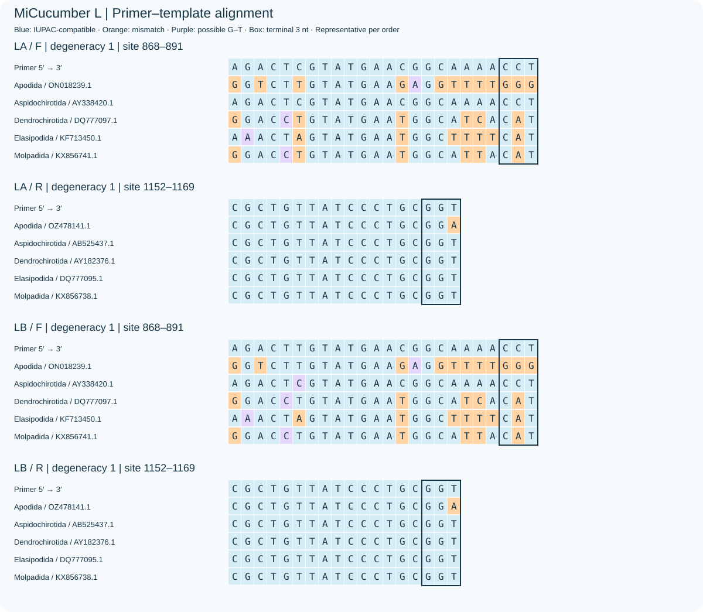
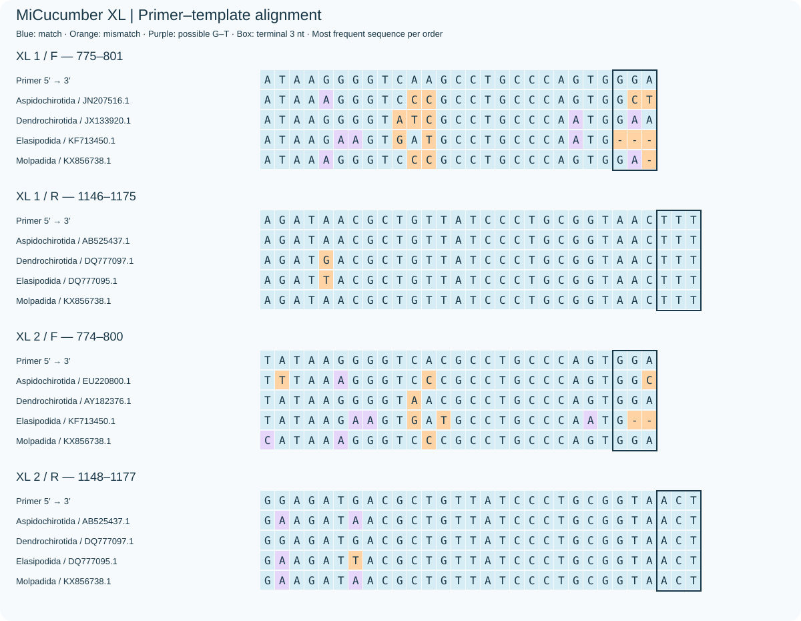

中文 · English · XS assessment / 评估 · Sequences / 序列
XS：固定简并单对，产物186–203 bp；非Apodida覆盖88.85%，完全匹配13.32%。严格WC/GT背景各20条，宽松WC≤3背景1396条；未通过S–XL原有保守背景门槛。仍漏检Apodida，待实验验证。 / XS is a fixed degenerate pair, products 186–203 bp, non-Apodida coverage/exact 88.85%/13.32%. Strict WC/GT background hits are 20 each; broad WC≤3 hits are 1396. XS fails the original conservative S–XL background gate, misses Apodida and awaits wet-lab validation.

Background columns omit terminal constraints and count records, not amplification fractions. / 背景列不强制末端兼容，计数为记录数。
| Scheme | Coverage | Exact | WC≤3 | GT≤2 | WC≤4 |
|---|---|---|---|---|---|
| XS | 88.85% | 13.32% | 1396 | 26 | 2609 |
| SD | 80.92% | 9.04% | 26 | 3 | 455 |
| S | 66.85% | 3.35% | 4 | 3 | 331 |
| SA+SB | 73.49% | 5.53% | 4 | 3 | 378 |
| MD | 67.17% | 25.48% | 2 | 4 | 76 |
| M | 33.56% | 5.52% | 1 | 2 | 13 |
| MA+MB | 36.36% | 10.80% | 1 | 3 | 39 |
| LD | 66.78% | 19.14% | 20 | 16 | 1168 |
| L | 41.03% | 7.87% | 0 | 0 | 46 |
| LA+LB | 43.33% | 15.00% | 0 | 0 | 46 |
| XLD | 19.95% | 0.69% | 1 | 1 | 1309 |
| XL | 15.81% | 0.69% | 1 | 1 | 756 |
| XLA+XLB | 24.29% | 0.69% | 1 | 1 | 756 |
| S-original | 89.84% | 76.75% | 3248 | 3401 | 3923 |









Copyright © 2026 Fei Xia (GUIBA-EX). Terms.